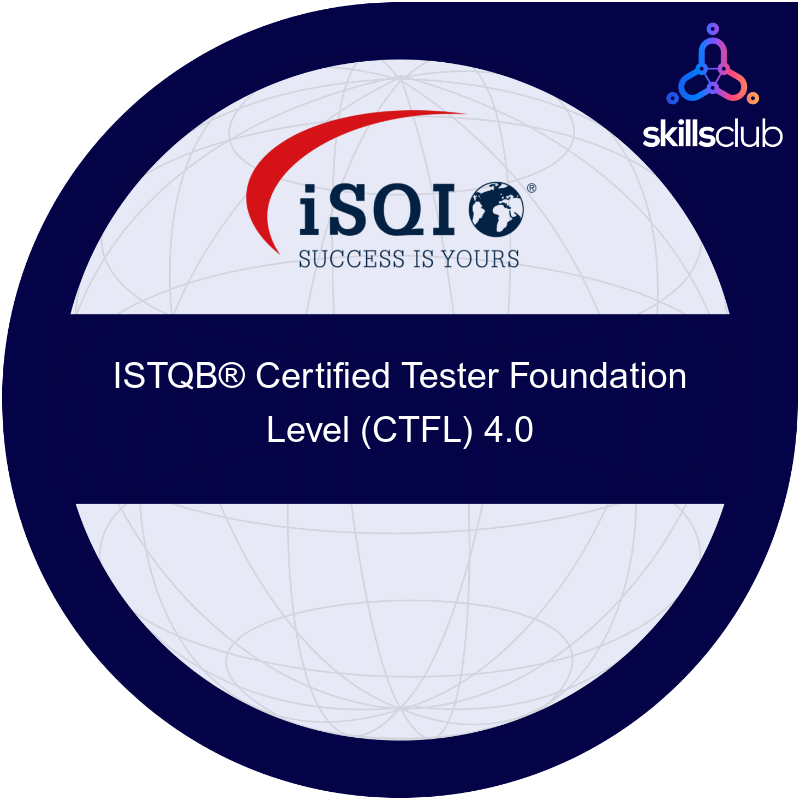

Zertifizierungen & Badges
Extern geprüft

ISTQB® Certified Tester Foundation Level (CTFL) 4.0 Professional Scrum Master™ I (PSM I)
Professional Scrum Master™ I (PSM I)
IBM Professional Training
 Architectural Thinking
Architectural Thinking
 Containers & Kubernetes Essentials
Containers & Kubernetes Essentials
 Enterprise Design Thinking Practitioner
Enterprise Design Thinking Practitioner
 Security and Privacy by Design Foundations
Security and Privacy by Design Foundations
 IBM Generative & Agentic AI Foundation
IBM Generative & Agentic AI Foundation
Alle Credentials sind über das Credly-Profil verifizierbar.
Fähigkeiten
| Programmiersprache Java |
| Programmiersprache C |
| Funktionale Programmiersprache Haskell |
| Diverse Algorithmen und Datenstrukturen |
| Laufzeitabschätzung |
| Darstellung von Datenbanken mit Hilfe des relationalen Modells und EER-Diagrammen |
| Relationale Algebra |
| SQL (postgreSQL / PL/pgSQL) |
| Mehrbenutzersynchronisation / Transaktion |
| Multithreading & Concurrency Control in Java |
| Grundlagen Security (Netzwerksicherheit, Sicherheit in der Software-Entwicklung...) |
| Linux-Kenntnisse |
| Grundlegender Aufbau und Arbeitsweise von Betriebssystemen anhand von UNIX |
| XML (DTD, XML Schema), XPath, XQuery, DOM/SAX, XSLT |
| Versionskontrolle (Git) |
| Java Persistence API |
| Shared Memory |
| Benutzung von Sockets und Protokollen (TCP, UDP) |
| Programmierung von verteilten Systemen |
| Spring Framework, Spring Boot |
| Jakarta EE |
| XSLT, JSP |
| HTML, JavaScript, TypeScript, Angular, Vue.js |
Bachelorstudium Software & Information Engineering - UE 033 534 (TU Wien)
| Formale Modellierung | Befriedigend (3) |
| Technische Grundlagen der Informatik | Gut (2) |
| Datenmodellierung | Gut (2) |
| Datenmodellierung 2 | Befriedigend (3) |
| Algebra und Diskrete Mathematik für Informatik und Wirtschaftsinformatik (Übung) | Sehr gut (1) |
| Algebra und Diskrete Mathematik für Informatik und Wirtschaftsinformatik (Vorlesung) | Gut (2) |
| Einführung in die Programmierung 1 | Befriedigend (3) |
| Einführung in die Programmierung 2 | Befriedigend (3) |
| Algorithmen und Datenstrukturen | Befriedigend (3) |
| Denkweisen der Informatik | Sehr gut (1) |
| Introduction to Security | Gut (2) |
| Betriebssysteme (Vorlesung) | Genügend (4) |
| Betriebssysteme (Übung) | Gut (2) |
| Funktionale Programmierung | Genügend (4) |
| Semistrukturierte Daten | Gut (2) |
| Analysis für Informatik und Wirtschaftsinformatik (Vorlesung) | Gut (2) |
| Analysis für Informatik und Wirtschaftsinformatik (Übung) | Befriedigend (3) |
| Objektorientierte Modellierung | Gut (2) |
| Objektorientierte Programmiertechniken | Befriedigend (3) |
| Web Engineering | Gut (2) |
| Verteilte Systeme (Übung) | Sehr gut (1) |
| Verteilte Systeme (Vorlesung) | Genügend (4) |
| Software Engineering & Projektmanagement (Projekt) | Gut (2) |
| Daten- und Informatikrecht | Gut (2) |
| Softwareprojekt-Beobachtung und -Controlling | Sehr gut (1) |
| Theoretische Informatik und Logik | Befriedigend (3) |
| Einführung in Visual Computing | Genügend (4) |
| Interface and Interaction Design | Befriedigend (3) |
| Daten- und Informatikrecht (Übung) | Gut (2) |
| Advanced Database Systems | Befriedigend (3) |
| Wissenschaftliches Arbeiten (Seminar) | Sehr gut (1) |
| Gesellschaftswissenschaftliche Grundlagen der Informatik | Genügend (4) |
| Statistik und Wahrscheinlichkeitstheorie (Vorlesung) | Befriedigend (3) |
| Statistik und Wahrscheinlichkeitstheorie (Übung) | Sehr gut (1) |
* wo nicht explizit angegeben Vorlesung mit Übung
Download Sammelzeugnis (PDF)